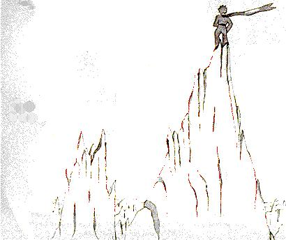

Le petit prince fit l'ascension d'une haute montagne. Les seules montagnes qu'il eût jamais connues étaient les trois volcans qui lui arrivaient au genou. Et il se servait du volcan éteint comme d'un tabouret. "D'une montagne haute comme celle-ci, se dit-il donc, j'apercevrai d'un coup toute la planète et tous les hommes..." Mais il n'aperçut rien que des aiguilles de roc bien aiguisées. 
- Bonjour, dit-il à tout hasard.
- Bonjour... Bonjour... Bonjour... répondit l'écho.
- Qui êtes-vous ? dit le petit prince.
- Qui êtes-vous... qui êtes-vous... qui êtes-vous... répondit l'écho.
- Soyez mes amis, je suis seul, dit-il.
- Je suis seul... je suis seul... je suis seul... répondit l'écho.
"Quelle drôle de planète ! pensa-t-il alors. Elle est toute sèche, et toute pointue et toute salée. Et les hommes manquent d'imagination. Ils répètent ce qu'on leur dit... Chez moi j'avais une fleur: elle parlait toujours la première..."
| Chapitre XVIII | |
Capítulo XVIII |
| Index | Capítulo XIX | |
| Chapitre XX | Capítulo XX |